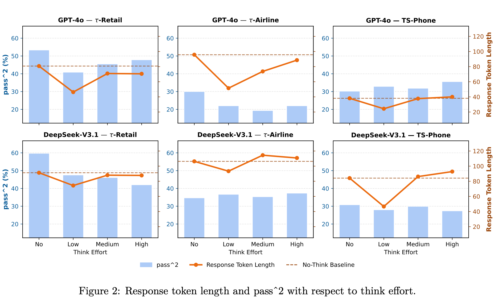
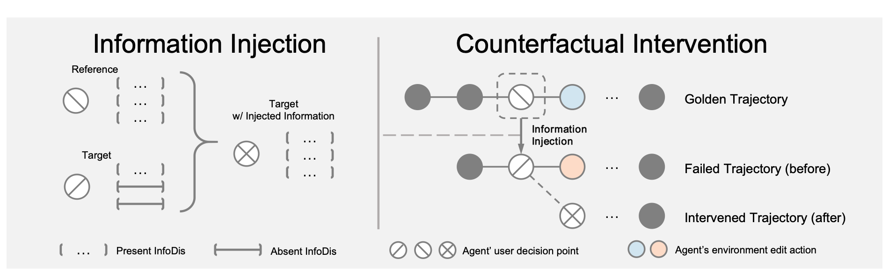
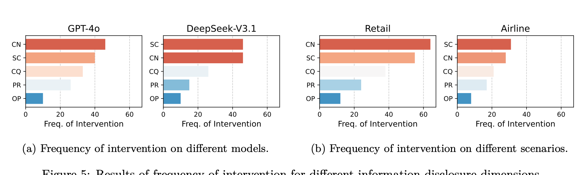
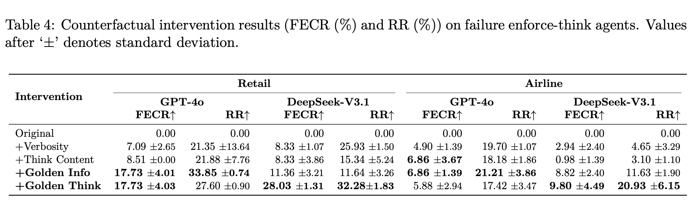
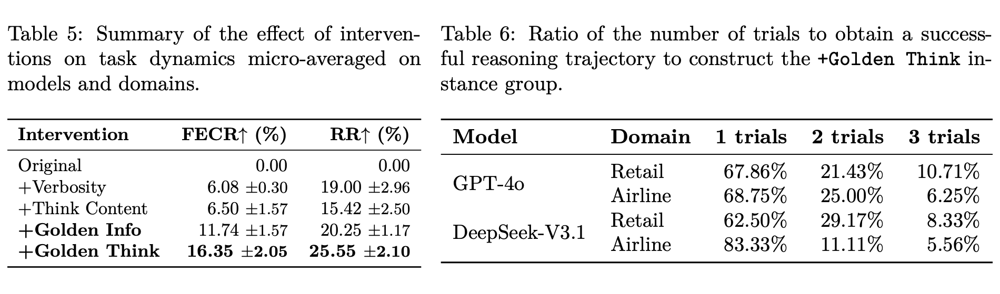
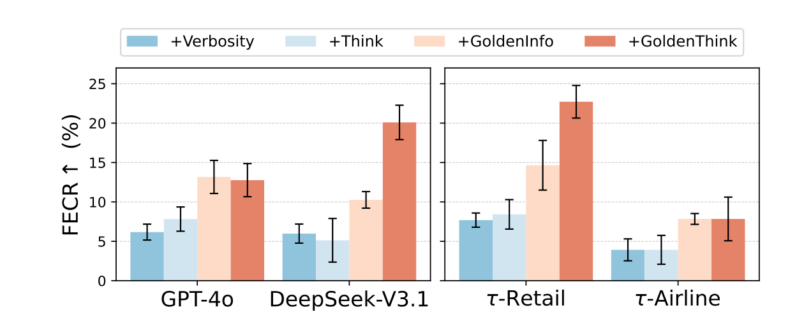
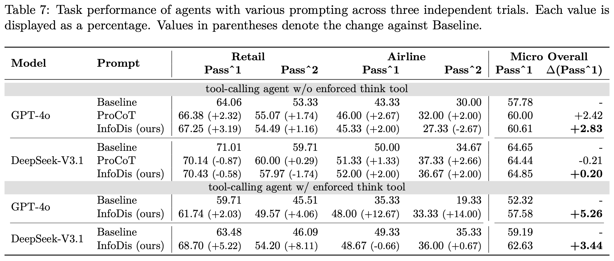

Thinking does not reliably scale communication
Increasing internal think effort does not consistently improve task success or increase user-visible response length across models and service scenarios.

User-engaged LLM agents increasingly operate in service scenarios where task success depends on coordination between the agent, the user, and a stateful environment. The agent often has access to task policies, tool results, and environment states that the user cannot observe, making communication central to successful task completion.
We study a communication-level failure mode: internal reasoning can be counterproductive for interactive information disclosure. We define information disclosure as the proactive communication of decision-relevant state corrections, options, constraints, consequences, and retrieved environment information. Across five models and three user-service scenarios, enforced thinking has unstable utility, and more thinking does not reliably produce richer user-facing disclosure.
Evidence-grounded probing and turn-level counterfactual intervention show that restoring missing decision-relevant information can correct downstream environment-edit actions. A lightweight disclosure-aware prompt also mitigates degradation from enforced thinking. These findings suggest that agents should be optimized not merely to think more, but to communicate the right information at the right decision point.
The framework measures five kinds of information an agent may need to disclose before a user decision.
For a failed target trajectory and a matched successful trajectory, the method identifies the last user decision point before the first environment edit. It then finds information that was present in the successful response but absent from the failed response, injects that evidence, and rolls the dialogue forward again.

Increasing internal think effort does not consistently improve task success or increase user-visible response length across models and service scenarios.

Across both models and service scenarios, State Correction (SC) and Constraint (CN) are the most frequently injected categories. This shows that failed trajectories most often omit information that corrects the user's understanding or explains limits on valid actions, while Option (OP) is consistently the least frequent missing category.

Table 4 reports the intervention results for each model and domain. Injecting missing golden information improves the first environment edit more consistently than simply increasing verbosity or exposing think content from the failed trajectory. Golden think content can be stronger, but it must first be obtained from a separately successful run.



A lightweight prompt that asks agents to disclose decision-relevant information improves micro-averaged pass@1 by 5.26 points for GPT-4o and 3.44 points for DeepSeek-V3.1 when the think tool is enforced.

Raw internal thinking is not equivalent to effective user-facing communication. Information disclosure provides an interpretable way to diagnose a meaningful subset of agent failures and a practical target for improving user-service agents: convert environment information into timely, public, decision-relevant disclosure.
@article{li2026thinkingmakesllmagents,
title={Thinking Is Not Telling: Information Disclosure in User-Service LLM Agents},
author={Jiatong Li and Changdae Oh and Hyeong Kyu Choi and Jindong Wang and Sharon Li},
year={2026},
journal={arXiv preprint arXiv:2602.07796},
}